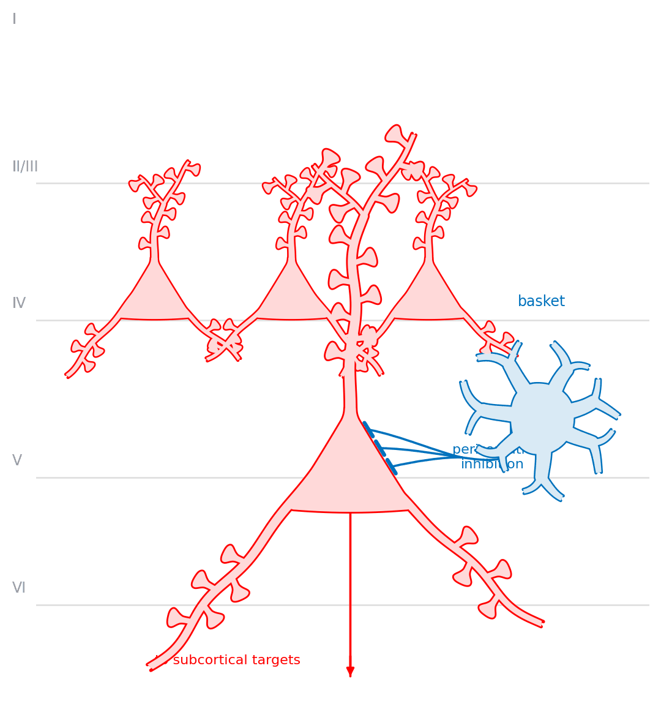
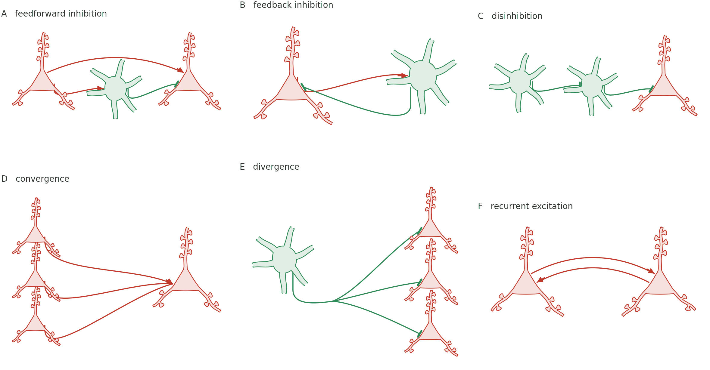
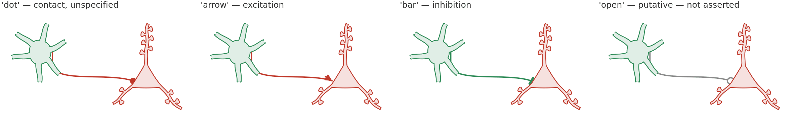
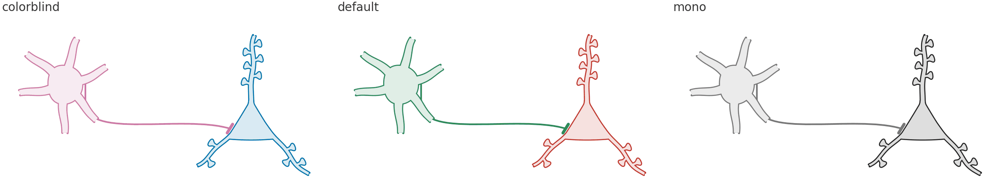

All examples Circuits
Circuit motifs
Cells wired to each other — which is what everything else in this library was building toward.
neuro.Pyramidalneuro.Basketconnect_tree

A cortical column: layer II/III pyramidal cells with forked apicals, one large layer V cell, a basket cell making perisomatic contacts on it, and the layer V output leaving as a projection. The layer rules are the only horizontal lines in the figure — nothing else sits on a baseline by accident.
Six motifs

One colour and one mark per claim, held across all six panels, so the key is three lines rather than a paragraph.
| claim | |
|---|---|
| red, arrowhead | excitation |
| blue, bar | inhibition |
import biodraw as bd
pyr = bd.neuro.Pyramidal(spines=6, basal=2, at=(-1.9, 0.0), scale=0.55)
bas = bd.neuro.Basket(dendrites=6, forks=None, at=(0.0, -0.3), scale=0.85)
for cell in (pyr, bas):
cell.draw(ax=ax, wall_lw=0.9)
bd.connect(
ax=ax,
source=pyr.anchor("soma", nearest=bas.at), # the flank facing the target
target=bas.anchor("soma", nearest=pyr.at),
gap=0.05, # clearance at the wall, in local units
drop=0.15, # drop clear of the cell before running
rad=0.07, # bow; positive always bows up
endcap="arrow", # the claim: excitation
)nearest is what makes this readable: each connector lands on the side of the cell it is arriving from rather than reaching around the back, without any per-panel tuning.
Panel E uses bd.connect_tree rather than three separate calls — a cell reaching three targets has one axon that branches, not three axons. See Wiring for the side-by-side.
The same pair, four claims

Identical cells, identical geometry. Only the endcap and the colour change, which is exactly how much should have to.
bd.connect(ax=ax, source=src, target=dst, endcap="bar", color=INH)'open' is the one worth knowing about: a contact of the same kind that the figure is not asserting. If the data do not support the claim, the drawing should not make it.
Three palettes

p = bd.style.palette.get("colorblind") # or 'default', or 'mono'
pyr.draw(ax=ax, edge=p["excitatory"])
bas.draw(ax=ax, edge=p["inhibitory"])default — the palette the reference figure was drawn in.
colorblind — Okabe-Ito, distinguishable under all common forms of colour blindness. Use this for print.
mono — no hue at all, for journals that charge for colour, and as the check that a drawing still reads when its colours are taken away. If a figure only works in the first palette, it is relying on colour to carry a claim, and it will fail on someone's greyscale printout.
That check is why the two cell types differ structurally — a triangle with one apical, versus a round soma with dendrites in every direction — rather than only by hue. See Basket cell.
Building the column
big = bd.neuro.Pyramidal(
spines=10, basal_spines=5,
trunk_len=2.9, # apical reaching layer I
apical_fork=0.68, # ...forking near the top, as a real one does
at=(0.1, -1.15), scale=1.05, seed=7,
)
bd.connect_tree(
ax=ax,
source=bas.anchor("soma", nearest=big.at),
# Perisomatic — what a basket cell does. Named outright, because which
# compartment a contact lands on is a claim, and the author makes it.
targets=[big.anchor("soma", side=1, t=t) for t in (0.24, 0.42, 0.60)],
gap=0.035, drop=0.28, fork=0.5, spread=0.42,
endcap="bar", color=INH,
)Every cell takes a seed, and cells that would otherwise be identical get different ones — three layer II/III cells drawn from one seed are three copies of one cell, which reads as a diagram rather than as tissue.
Every figure above is output, not a stored asset — the full script that draws them.